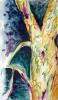
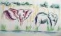
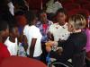

ART SAFARI - Watercolor...I was attracted to the fabulous scarring patterns that have developed on the trunk of this tree where local people have taken the bark to use for medicinal purposes. This is an acacia tree...it must be a close relative of the Palo Verde from the Sonoran Desert in Arizona. It has yellowish-green bark, thorns, and small leaves.
Jon and Marissa are living in Mzuzu, Malawi (where?). Jon is a Fulbright scholar working to harness the internet as an academic and economic resource for the Mzuzu University and the surrounding community. Marissa is an artist soaking in the inspiration of Malawi. She works with local artists and dedicates herself to volunteer work.
Yellow Fever Tree
Submitted by marissa on Mon, 2006-04-24 14:09.
Categories:
»
- Login to post comments
Shire River Lookout
Submitted by marissa on Mon, 2006-04-24 14:05.Categories:
»
- Login to post comments
Village Visit on Zomba Mountain
Submitted by marissa on Mon, 2006-04-24 13:40.
ART SAFARI - Graphite sketches of women and children in a small village on the mountain. We were invited into one of the red, mud brick huts when it started to pour with rain. Inside, we spent two hours drawing with the village children...it was a beautiful exchange. They were as enthralled with us as we were with the opportunity to sketch amongst them.
Categories:
Elephants at water's edge
Submitted by marissa on Mon, 2006-04-24 13:20.
ART SAFARI - We were amazingly blessed to see a heard of 50 elephants (NOT exagerating) playing at the water's edge along the Shire River. We made a good long stop to get plenty of sketches and paintings of such fantastic models.
Categories:
Professor Saints and the nutty open source textbook
Submitted by jon on Mon, 2006-04-24 02:44.I must apologize for the lack of content on the blog recently. Things have been busy in good ways... very good ways. I have been asked to teach the first ever introductory to computer science course here at Mzuzu University Department of Mathematics! Fortunately the course is only meeting twice a week, so there is plenty of time to piece together lessons and lectures. So far, the students seem to be enjoying themselves. They are very excited about having the chance to learn to program computers. Our only problem so far is that the number of computers on campus comes no where close to matching the students enthusiasm for the subject.
Categories:
»
- jon's blog
- Login to post comments
- Read more
Differences between internet connectivity in Colorado and Malawi
Submitted by jon on Mon, 2006-04-24 02:37.Malawians, in general, are both very poor and very ambitious. I think this is why I am finding engineering in Malawi to be such exhilarating experience. So often here we are asked to do a lot with a little. Its forcing me to push the limits my creativity, my imagination, and my skills as an engineer.
I was in a meeting last week to discuss the redesign of the internet network architecture for Mzuzu University. There is a need to rethink how users are allowed to connect to the internet here in Mzuzu. Currently the network is designed much like the networks of the universities in the USA. In general, computers with connections allow users are to have unlimited access to the internet. A quick comparison of the internet connection here in Mzuzu to the last connection I used at my house in the USA will show why a different network architecture is necessary in Mzuzu:
Categories:
»
- jon's blog
- Login to post comments
- Read more
Backyard Landfills
Submitted by marissa on Thu, 2006-03-30 13:09.I would challenge my friends and family back in the states to try this one out…
Instead of putting your trash out on the street for pick-up next week, dig a small hole in your backyard and start dumping your waste there. It will be amazing to see how quickly your consumption habits change and how environmentally conscious you become.
As you can guess, this is the system for garbage disposal in Malawi. Any trash we make, literally, make a landfill of our backyard. In this light, composting is an absolute must. Any organic waste gets dumped onto the compost pile, which will then be used as fertilizer in the garden where we will grow many of our own veggies and herbs. Soda and beer bottles are all recycled, so much so that, cans aren’t stocked much at the stores and you get a refund on new beverage purchases when you return used bottles. What a brilliant system! Other recycling services do not exist, so we end up making all sorts of consumer decisions to minimize the size of the landfill in our backyard.
Categories:
Celebrity Visit
Submitted by marissa on Tue, 2006-03-28 13:05.
Cheri Blauwet, a good friend of ours from UofA, speaks on sports as a vehicle for dissabily rehabilitation and social integration in Blantyre, Malawi. Here she is showing her gold medal, won for the 800m, at the 2004 Paralympic games in Athens, to young Malawian sprinters. It is still rare for girls to compete athletically in Malawi.
Categories:
 Recent Posts
Recent Posts